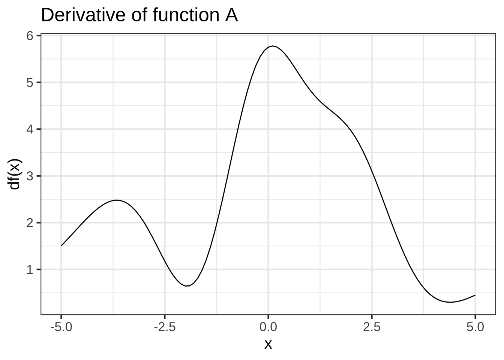
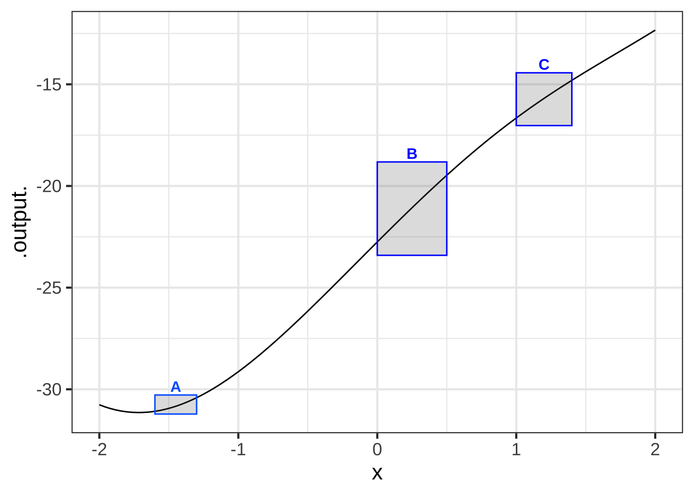
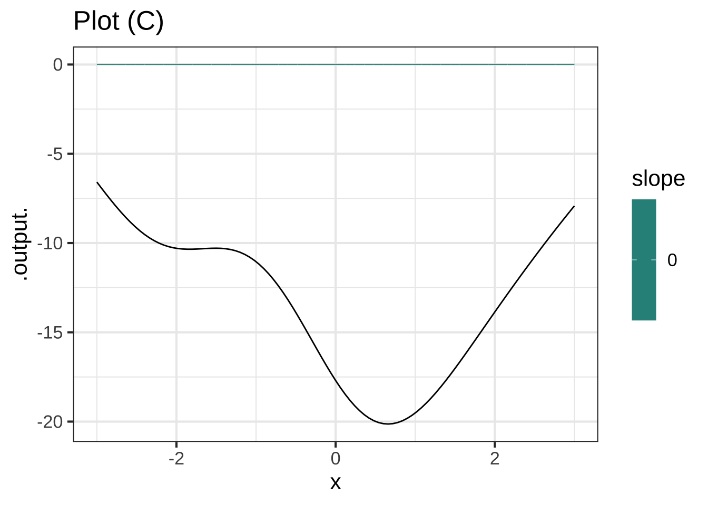
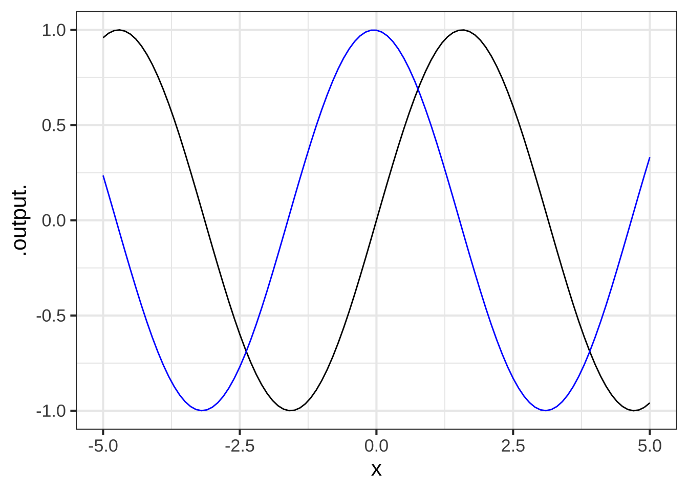

20 Concavity and curvature
Looking at the graph of a function, our eyes immediately register the slope at any point we focus on. A glance shows whether the slope at that point is positive or negative. Comparing the slopes at two locales is also an automatic visual task: most people have little difficulty saying which slope is steeper.
One consequence of this visual ability is that it’s easy to recognize whether a line that touches the graph at a point is tangent to the graph.  2230
2230
There are other aspects of functions, introduced in Section 4.3, that
are also readily discerned from a glance at the function graph. 2235
- Concavity: We can tell within each locale whether the function is concave down, concave up, or not concave.
- Curvature: Generalizing the tangent line capability a bit, we can do a pretty good job of eyeballing the tangent circle recognizing whether a circle has much too large or much too small a radius..
- Smoothness: We can distinguish smooth functions from non-smooth ones. Or, as you will see, there are some kinds of smoothness that we can discern and others that are not apparent to the eye.
The following exercises are simply meant to test your visual acuity in spotting concavity, tangency, and smoothness. Then we’ll move on to the calculations involved.
20.1 Quantifing concavity and curvature
It often happens in building models that the modeler (you!) knows something about the concavity and/or curvature of a function. For example, concavity is important in classical economics; the curve for supply is concave down while the curve for demand is concave up. For a train, car, or plane, there are forces that depend on the curvature of the track, road, or trajectory. If you are designing a road, you’ll need to calculate the curvature in order to know if the road is safe at the indicated speed.
It turns out that quantifying these properties of functions or shapes is naturally done by calculating derivatives. 2240
Imagine designing a highway. Due to the terrain, part of the road is oriented east-west and another part north-south. For vehicles to use the road, those two parts need to be connected together! (In math-speak, we might say that the road has to be continuous, but this is just common sense.)
From your experience with highways, you know the connection will be a smooth curve. If the curve is part of a circle, then the design needs to specify the radius of curvature of the circle. Too tight a radius and the traffic won’t be able to handle the centrifugal force and will drift or skid off the road. A big radius is needed for safety, but making the radius bigger than required adds additional cost to road construction.
It’s not as simple as finding the radius of the curve. The radius needs to change at the entry and exit of the curve. Why? Here’s an explanation from the American Association of State Highway and Transportation Officials *Policy on Geometric Design of Highways and Streets (1994):
Any motor vehicle follows a transition path as it enters or leaves a circular horizontal curve. The steering change and the consequent gain or loss of centrifugal force cannot be effected instantly. For most curves the average driver can effect a suitable transition path within the limits of normal lane width. However, with combinations of high speed and sharp curvature the resultant longer transition can result in crowding and sometimes actual occupation of adjoining lanes. In such instances transition curves would be appropriate because they make it easier for a driver to confine the vehicle to his or her own lane. The employment of transition curves between tangents and sharp circular curves and between circular curves of substantially different radii warrants consideration.
Later in this chapter, you’ll see the calculus concepts that relate to designing a road with a gently changing curvature. (Hint, but don’t get scared: It’s the third derivative, not the first or the second.)
Let’s frame the calculations in terms of a function \(f(x)\). Depending on the setting, \(x\) might be the price of a product and \(f(x)\) the demand for that product. Or the graph of \(f(x)\) might be the path of a road drawn in \((x,y)\) coordinates or the reach of a robot arm as a function of time. Remember that \(f()\) is just a pronoun that I’m using instead of a proper descriptive name. I use such pronouns (also, \(g()\), \(h()\), the “she” and “he” of mathematical language) when writing about the general properties of functions.
20.2 Concavity
Recall that to find the slope of a function \(f(x)\) at any input \(x\), you compute the derivative of that function, which we’ve been writing \(\partial_x\,f(x)\). Plug in some value for the input \(x\) and the output of \(\partial_x\, f(x)\) will be the slope of \(f(x)\) at that input. (Chapter 19 introduced some techniques for computing the derivative of any given function.)
Now we want to show how differentiation can be used to quantify the concavity of a function. It will help if we augment our nomenclature a bit. When we speak of the “derivative” of a function, we mean something that might be more completely expressed as the first derivative of the function. Just that name naturally suggests that there will be a second derivative, a third derivative, and so on.
Figure 20.1 shows a simple function that is concave down.

Figure 20.1: A function that is concave down.
Notice that the concavity is not about the slope. The curve in Figure 20.1 is concave down everywhere in the domain \(0 \leq x \leq 4\), but the slope is positive for \(0 \leq x \leq 1\) and negative for larger \(x\). Slope and concavity are two different aspects of a function.
As introduced in Chapter 4, the concavity of a function depends not on the slope, but on the change in the slope. Figure 20.2 adds some annotations on top of the graph in Fig. 20.1. In the subdomain marked A, the function slope is positive while in the subdomain B, the function slope is negative. It is this transition from the slope in A to the slope in B that corresponds to the concavity of the function between A and B.

Figure 20.2: Convexity is about how the slope changes from one place in the domain to another.
Similarly, the concavity of the function between B and C, reflects the transition in the slope from B to C. Even though the slope is negative in both B and C, the change in slope tells us about the concavity.
Let’s look at this using symbolic notation. Keep in mind that the function graphed is \(f(x)\) while the slope is the function \(\partial_x\,f(x)\). We’ve seen that the concavity is indicated by the change in slope of \(f()\), that is, the change in \(\partial_x\, f(x)\). We’ll go back to our standard way of describing the rate of change near an input \(x\):
\[\text{concavity.of.f}(x) \equiv\ \text{rate of change in}\ \partial_x\, f(x) = \partial_x [\partial_x f(x)] \\ \\ = \lim_{h\rightarrow 0}\frac{\partial_x f(x+h) - \partial_x f(x)}{h}\] We’re defining the concavity of a function \(f()\) at any input \(x\) to be \(\partial_x [\partial_x f(x)]\). We create the concavity_of_f(x) function by applying differentiation twice to the function \(f()\).
Such a double differentiation of a function \(f(x)\) is called the second derivative of \(f(x)\). The second derivative is so important in applications that it has it’s own compact notation: \[\text{second derivative of}\ f()\ \text{is written}\ \partial_{xx} f(x)\] Look carefully to see the difference between the first derivative \(\partial_x f(x)\) and the second derivative \(\partial_{xx} f(x)\): it’s all in the double subscript \(_{xx}\).
Computing the second derivative is merely a matter of computing the first derivative \(\partial_x f(x)\) and then computing the (first) derivative of \(\partial_x f(x)\). In R this process looks like:
As a shortcut for the two-step process above, for the second derivative you can use a notation which doubles up on the x on the right-hand side of the tilde:
dxx_f <- D(f(x) ~ x & x)
20.3 Curvature
As you see from Section 20.2, it’s easy to quantify the concavity of a function \(f(x)\): just evaluate the second derivative \(\partial_{xx} f(x)\). But it turns out that people are very poor at estimating the quantitative value of concavity by eye.
To illustrate, consider the square function, \(f(x) \equiv x^2\). (See Figure 20.3.)

Figure 20.3: Does the concavity of the square function vary with \(x\)?
Clearly, the square function is concave up. Now a test: Looking at the graph of the square function, where is the concavity the largest? Don’t read on until you’ve pointed where you think the concavity is largest.
With your answer to the test question in mind, let’s calculate the concavity of the square function using derivatives.
\[f(x) \equiv x^2\ \text{ so }\ \partial_x f(x) = 2 x\ \text{ and therefore }\ \partial_{xx} f(x) = 2\]
The second derivative of \(f(x)\) is positive, as you would expect for a function that is concave up. What you might not expect, however, is that the second derivative is constant.
The concavity-related property that the human eye reads from the graph of a function is not the concavity itself, but the curvature of the function. The curvature of \(f(x)\) at a point \(x_0\) is defined to be the radius of the circle that is tangent to the function at \(x_0\).
Figure 20.4 illustrates the changing curvature of \(f(x) \equiv x^2\) by inscribing tangent circles at several points on the function graph, marked with dots. You can see the tangency of the circle to the function graph; the function’s thin black line goes right down the middle of the broader lines used to draw the circles.

Figure 20.4: At any point on the graph of a smooth function, a circle tangent to the graph can be drawn. The radius of this circle is \(1/{\cal K}\).
Black dots have been put along the graph at the points where the graph of the function is tangent to the inscribed circle. The visual sign of tangency is that the graph of the function goes right down the center of the circle.
The inscribed circle at \(x=0\) is tightest. The circle at \(x=1\) has a somewhat larger radius. The radius of the circle at \(x=-1.5\) is the largest of all. Whereas the concavity is the same at all points on the graph, the visual impression that the function is most highly curved near \(x=0\) is better captured by the radius of the inscribed circle. The radius of the inscribed circle at any point is the reciprocal of a quantity \({\cal K}\) called the curvature.
The curvature \({\cal K}\) of a function \(f(x)\) depends on both the first and second derivative. The formula for curvature \(K\) is somewhat off-putting; you are not expected to memorize it. But you can see where \(\partial x f()\) and \(\partial_{xx}f()\) come into play.
\[{\cal K}_f \equiv \frac{\left|\partial_{xx} f(x)\right|}{\ \ \ \ \left|1 + \left[\strut\partial_x f(x)\right]^2\right|^{3/2}}\]
Mathematically, the curvature \(\cal K\) corresponds to the reciprocal of the radius of the tangent circle. When the tangent circle is tight, \(\cal K\) is large. When the tangent circle has a very large radius, that is, the function is very close to approximating a straight line, \(\cal K\) is very small.
2245
Returning to the highway design example earlier in the chapter … The Policy on geometric design of highways and streets called for the curvature of a road to change gently, giving the driver time to adjust the steering and accomodate the centrifugal force of the car going around the curve.
Changing curvature implies that \(\partial_x {\cal K}\) is non-zero. Since \({\cal K}\) depends on the first and second derivatives of \(f(x)\), the Policy on gradual change means that the third derivative of \(f(x)\) is non-zero.
20.4 Exercises
Exercise 20.1: ykIBCb
Glance at the graph. In which boxes is the slope negative? ( ) A, B, C ( ) B, C, D (x) A, C, D [[Good.]]
Exercise 20.2: QnpuMN
Consider the slope of the function in the domains marked by the boxes. What is the order of boxes from least steep to steepest? ( ) A, B, C ( ) C, A, B (x) A, C, B ( ) none of these [[Excellent!]]
Exercise 20.3: kq3t86
Which of the line segments is tangent to the curve at the point marked with a dot? ( ) A ( ) B ( ) C (x) all of them ( ) none of them [[Good.]]
Exercise 20.4: BVRjhF
Which of the line segments is tangent to the curve at the point marked with a dot? (x) A ( ) B ( ) C ( ) all of them ( ) none of them [[Excellent!]]
Exercise 20.5: 5ddB5r

In which of the boxes is the function concave up? (x) A and E ( ) B and D ( ) C and D [[Good.]]
Exercise 20.6: 4nsU0z
In which boxes is the function smooth? ( ) A and B ( ) B and C (x) A and C ( ) none of them ( ) all of them [[Right!]]
In which boxes is the function smooth? ( ) A and B ( ) B and C ( ) A and C ( ) none of them (x) all of them [[Right!]]

In which boxes is the function smooth? ( ) A (x) B ( ) neither of them ( ) both of them [[Excellent!]]
Exercise 20.7: iIXOYZ
We introduced concavity graphically and used the terms “concave up” and “concave down.” Now we can compute the concavity quantitatively using the second derivative.
In a sandbox, create this function and plot it. (Note: rfun() generates random functions in the same way you might by moving a pencil smoothly on a piece of paper. The seed = 8427 effectively chooses which one of infinitely many functions is being generated. Different seeds give different functions. )
f <- rfun( ~ z, seed = 8427)
slice_plot(f(x) ~ x, domain(x=c(-5,5))) You can see that in the region near \(x = -1\) the function is concave down. While near \(x=2.5\) the function is concave up.
In your sandbox, compute the second derivative of \(f(x)\) and evaluate it at \(x=-1\) and \(x=2.5\).
dxx_f <- D(f(x) ~ x & x)
dxx_f(-1)
dxx_f(2.5)Using these results, and perhaps experimenting a little with different values of \(x\), you should be able to answer this question:
Which of these is a correct statement of "concave up" in terms of the value of $$\partial_{xx} f(x)$$?
(x) A function is concave-up at input $$x_0$$ when $$\partial_{xx} f(x_0) > 0$$
( ) A function is concave-up at input $$x_0$$ when $$\partial_{xx} f(x_0) < 0$$
( ) A function is concave-up at input $$x_0$$ when $$\partial_{xx} f(x_0) < 0$$ **and** $$\partial_x f(x_0) < 0$$
( ) A function is concave-up at input $$x_0$$ when $$\partial_{xx} f(x_0) > 0$$ **and** $$\partial_x f(x_0) > 0$$
[[Nice!]]
Recall that an inflection point is a value for the input \(x\) at which \(f(x)\) changes from concave up to concave down, or vice versa. Add a statement to your sandbox to graph \(\partial_{xx} f(x)\).
From reading the graph of $$\partial_{xx} f(x)$$, say which of these is nearest to an inflection point for $$f(x)$$.
( ) $$x = 0.0$$
(x) $$x = -4.0$$
( ) $$x = 2.5$$
( ) $$x = -3$$
[[The inflection point nearest $$x=-4$$ occurs at $$x = -4.156$$.]]
How many inflection points are there for $$f(x)$$ in the domain $$-5 \leq x \leq 5$$?
( ) 1
( ) 2
(x) 3
( ) 4
( ) 5
[[You can see this by graphing $$\partial_{xx} f(x)$$ and counting the zero crossings.]]
Exercise 20.8: bHacc6
The graph of the function \(g(x) \equiv \sqrt{\strut R^2 - x^2}\) has the shape of a semi-circle of radius \(R\), e.g.
Intuition suggests that the radius of an enscribed circle for \(g()\) should match the radius of the graph of the function.
In a SANDBOX, create a function to calculate the curvature of \(g()\) at any input \(x\). Then plot that curvature function over the domain \(-2 < x < 2\). Is the curvature of \(g()\) indeed constant? To help you get started, here is a bit of scaffolding for your sandbox.
g <- makeFun(sqrt(R^2 - x^2) ~ x, R = 2) # define g()
dg <- D(g(x) ~ x) # first derivative of g()
ddg <- D(g(x) ~ x & x) # second derivative of g()
curvature <- makeFun(abs(ddg(x)) / abs(__fill_in_the_formula__)^(3/2) ~ x)
slice_plot(curvature(x) ~ x, domain(x=c(-2, 2)))We set the default value of the parameter \(R\) to be 2.
What is the curvature of $$g(x)$$? ( ) 0 (x) 0.5 ( ) 1 ( ) 1.5 ( ) 2 [[Nice!]]
Exercise 20.9: jyXhPM
Here is a graph of \(\sin(x)\) with points marked at \(x=-\pi/2\), \(x=0.923\), and \(x = \pi/2\). At each of those points, an inscribed circle has been drawn, tangent to the function at that point.
You’re task is to calculate the curvature \(\cal K\) at each of those three input points. This is a matter of calculating the first and second derivatives of the sine function, evaluating those derivatives at the input values, and plugging them in to the formula in Section 20.3.
What is the curvature $$\cal K$$ of $$\sin(x=-\pi/2)$$? ( ) -1 ( ) 0 ( ) 0.5 (x) 1 ( ) 2 [[ ]]
What is the curvature $$\cal K$$ of $$\sin(x=-0.923)$$? ( ) -1 ( ) 0 (x) 0.5 ( ) 1 ( ) 2 [[ ]]
What is the curvature $$\cal K$$ of $$\sin(x=\pi/2)$$? ( ) -1 ( ) 0 ( ) 0.5 (x) 1 ( ) 2 [[ ]]
What is the curvature $$\cal K$$ of $$\sin(x=0)$$? (Hint: You can tell straight from the graph, even though no enscribed circle has been drawn. (x) 0 ( ) 0.5 ( ) 1 ( ) 2 [[The graph is straight at $$x=0$$, so no curvature]]
Exercise 20.10: rou0yO
The function road(x) has been constructed to correspond to a curved road of gradually tighter radius from left to right
R <- makeFun(3 - x/2 ~ x)
road <- makeFun(sqrt(R(x)^2 - x^2) ~ x)
slice_plot(road(x) ~ x, domain(x=c(-2, 2)), npts=500)
Using a SANDBOX, calculate the curvature of this road for each value of \(x\).
What is the curvature of the road at $$x=-1$$? (x) 0.22 ( ) 0.24 ( ) 0.27 ( ) 0.31 ( ) 0.35 [[Excellent!]]
What is the curvature of the road at $$x=1$$? ( ) 0.22 ( ) 0.24 (x) 0.27 ( ) 0.31 ( ) 0.35 [[Excellent!]]
What is the curvature of the road at $$x=0$$? ( ) 0.22 (x) 0.24 ( ) 0.27 ( ) 0.31 ( ) 0.35 [[Correct.]]